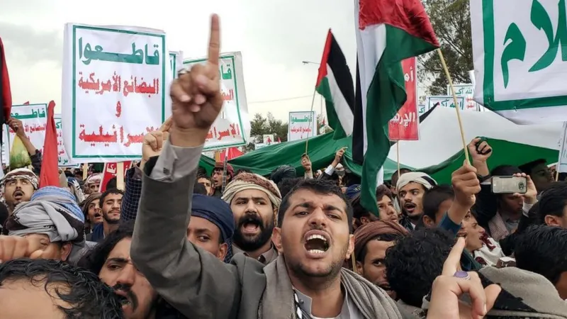
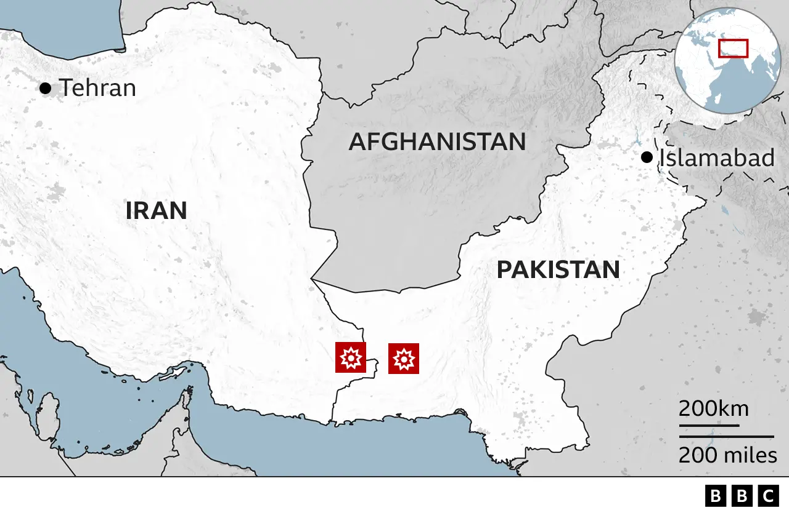

The past week has seen new rounds of violence across the Middle East, deepening fears of conflict spreading in an already unstable region.
Here is a brief guide to what has happened - and where it might lead.
On Tuesday, Iran unexpectedly carried out a missile and drone attack on Pakistani territory. Iran said it was targeting an Iranian Sunni Muslim militant group, Jaish al-Adl, that has staged attacks inside Iran. Pakistan said two children were killed and swiftly hit back, launching missiles at Pakistani "terrorist hideouts" on Iran's side of the border. Iran said three women, two men and four children were killed.

The flare-up has heightened tensions in a region already experiencing a multitude of crises. Although the area of the tit-for-tat strikes is far from the main theatres of fighting in the Middle East, the border is volatile and further incidents here could quickly escalate, for instance if Jaish al-Adl retaliates against Iran.
This week saw multiple rounds of US Navy missile strikes against the Houthi Zaidi Shia movement in Yemen, following Houthi attacks on shipping in the Red Sea, a waterway crucial to world trade. The Houthis - backed by Iran - stepped up their attacks in November following the outbreak of the war in Gaza. They vowed to target "Israeli-linked" boats so long as Israel's offensive continued, to show solidarity with the Palestinians.
Consequently all merchant shipping in the international waters has been put under threat, something considered intolerable by Western powers. The US and UK, backed by allies, launched the first air strikes against the Houthis last week to try to deter them - but the group has remained defiant.